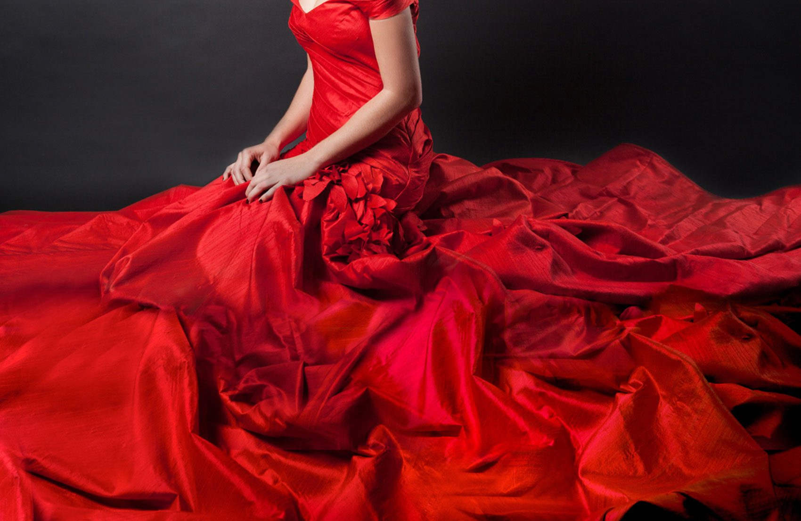
Ruchi Group, Surat, India · Since 1985
Fabrics, engineered for expression.
A Surat textile house shaping fashion fabrics, sarees and dobby weaves for four decades, with over 18 million metres of fabric manufactured every year.
Our Story
Built on textile
expertise. Designed
for what comes next.
Ruchi Group began in Surat in 1985 with a single focus: shirting fabric, done properly. Four decades on, that focus has grown into a full fashion-fabric manufacturing house: dress materials, sarees, shirting and home furnishing textiles, produced on modern weaving technology and shaped by an in-house team of designers, artists and production specialists.
"Our resolution to keep striving hard to deliver quality finished goods with versatile designs is the secret to our achievement."
That resolve is what turned a shirting manufacturer into an integrated fabric house, one built on quality, design and manufacturing capability, and trusted by vendors across local and global markets.
- 1985 Foundation. Ruchi begins manufacturing shirting fabric in Surat.
- Growth Expansion. The range widens into dress materials, sarees and home furnishing textiles.
- Capability Investment. Modern weaving technology and an in-house design team come together.
- Today Integration. An integrated fabric manufacturer producing 18M+ metres a year.
Look Closer
Fabric rewards attention.
Weave, weight, fall and sheen: the qualities that separate fabric from fashion only reveal themselves up close. It's where we spend most of our time.
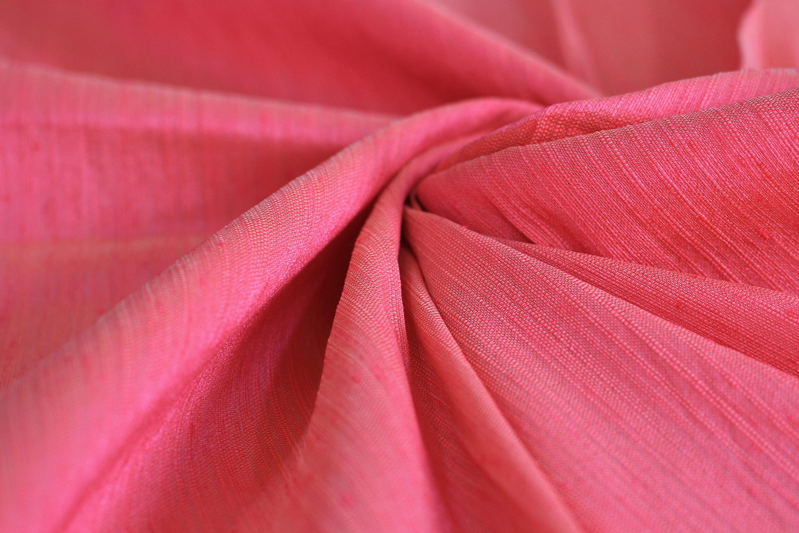
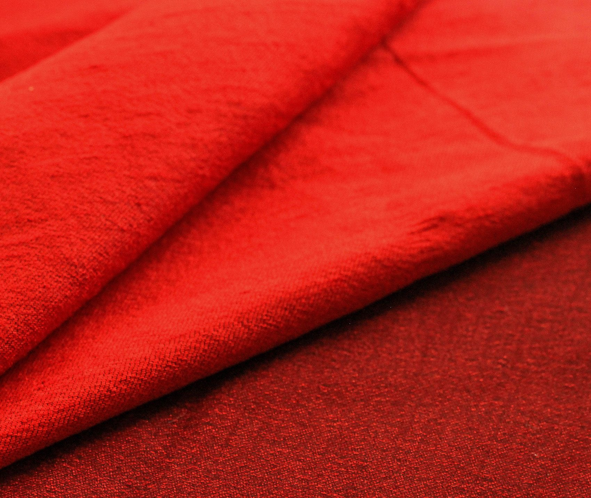
What We Make
Five ways we
work with fabric.
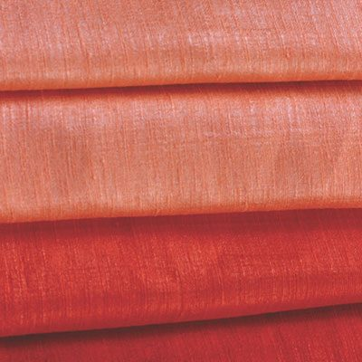
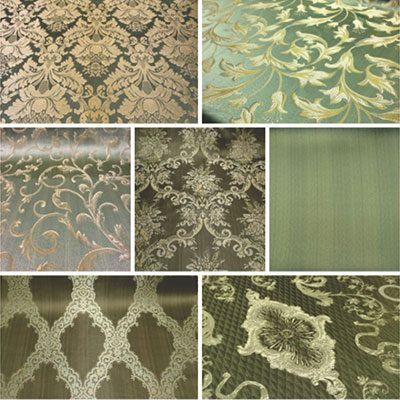
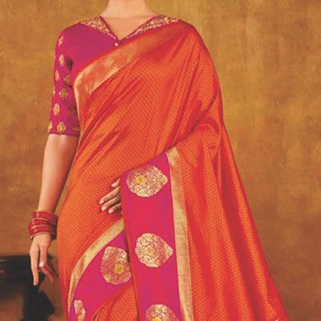
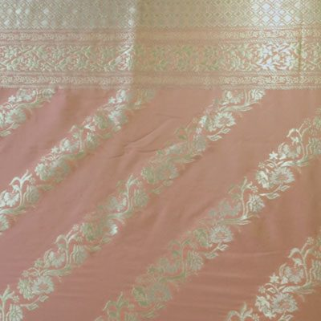
-
01
Plain Woven Fabrics
The foundation fabric: clean and versatile, without a self-design, built for shirting, kurtas and everyday garment applications. Manufactured in wide variety, at a scale that keeps quality consistent across the run.
-
02
Textured Fabrics / Dobby Designs
Self-designed weaves that shift the feel, fall and lustre of a fabric without a single printed motif, with compact patterns built to sit quietly under menswear and womenswear alike.
-
03
Jacquard Brocades
Ornamental weaving for borders, laces and garment detailing, in all-over or panel form, in designs that go up to eight colours within a single fabric.
-
04
Jacquard Sarees
Art-silk jacquards woven on silk, raw silk, organza and viscose bases, drawing on design traditions that range from Banarasi to Kanjivaram to Paithani.
-
05
Jacquard Dupattas
Fancy jacquard dupattas in dyeable and top-dyed varieties, built to complete a garment story, not just accessorize it.
How It's Made
From design to fabric
to finished expression.
Every metre begins on the loom floor and ends packed, sorted and ready to ship from our own warehouse. Design, weaving, finishing and dispatch sit under one roof, so quality holds from the first metre to the eighteen-millionth.
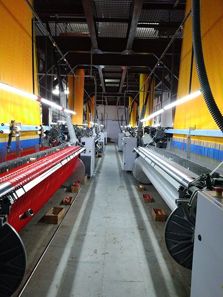
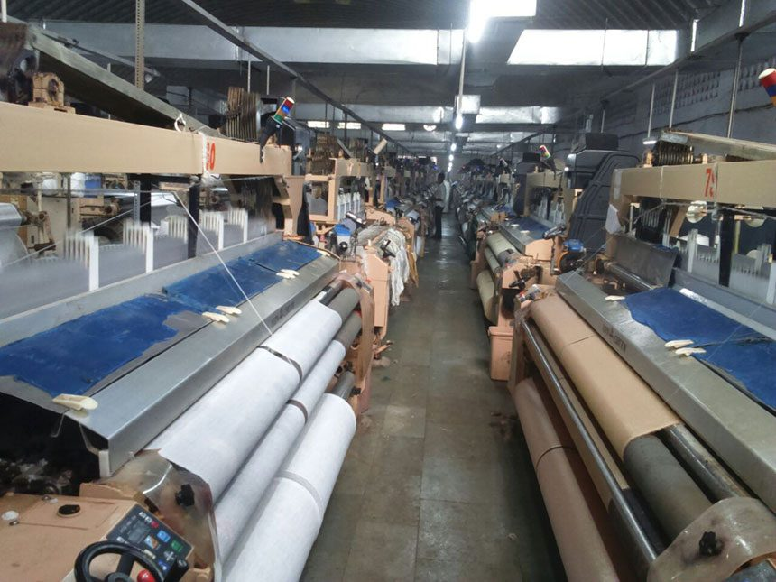
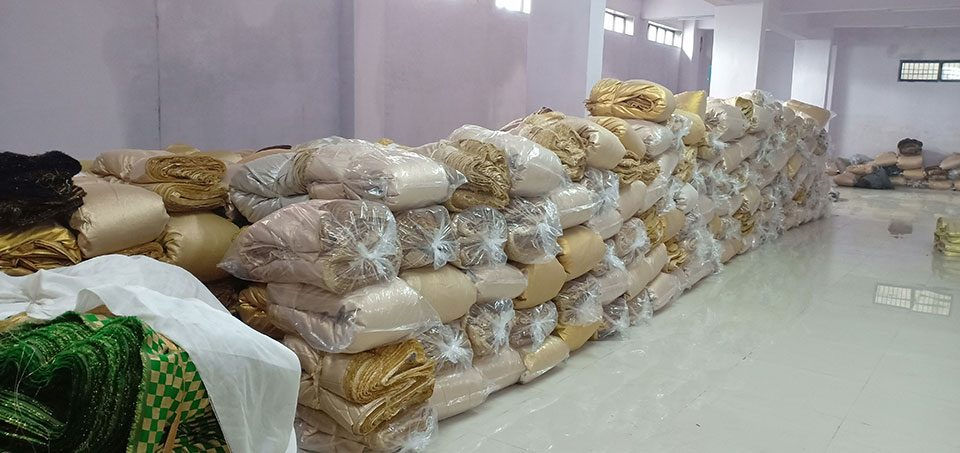
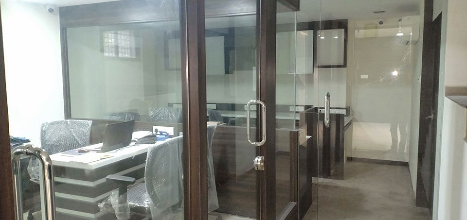
Why Ruchi
Six things we
don't compromise on.
-
01
Demand Excellence
We hold our own output to a higher standard than the brief asks for.
-
02
Continuous Innovation
New designs, new bases, new finishes: the range keeps moving forward.
-
03
Superior Quality
Consistency across the run, not just in the sample.
-
04
Customer Satisfaction
The relationship is built to outlast the order.
-
05
Passion & Commitment
Textile is treated as a craft here, not just a production line.
-
06
Accountability
We stand behind what leaves our floor.
B.H.A.G. "To build confidence & spread happiness among people by making them fashionable, thus providing a platform for growth."
Leadership
A word from the top.
Director's Message
At Ruchi Group, we pride ourselves on revolutionising the idea of stylish, affordable clothing, matching profound product knowledge with a genuine appetite to innovate.
We believe in strong in-house partnerships across weaving, designing, supply and marketing, working continuously to earn our place as a trusted textile partner.
Director, Ruchi Group
CEO's Message
The textile industry has changed dramatically over the years we've operated in it, and we've worked hard to keep our goals and designs aligned with that pace of change.
Our philosophy has always put the customer first. Demand Excellence, Continuous Innovation, Superior Quality, Customer Satisfaction, Passion & Commitment, and Accountability remain the pillars behind every metre we manufacture.
CEO, Ruchi Group
Gallery
A closer look
at Ruchi Group.
Fabric, texture and the floor it's made on: an unfiltered look behind the four decades of manufacturing.
Get In Touch
Let's create
what comes next.
Tell us what you're building: dress material, saree base, shirting range or something new, and our team will get back to you.
Ring Road, Surat, Gujarat, India
In front lane of Pratibha Mill, Pandesara GIDC,
Surat, Gujarat – 394221